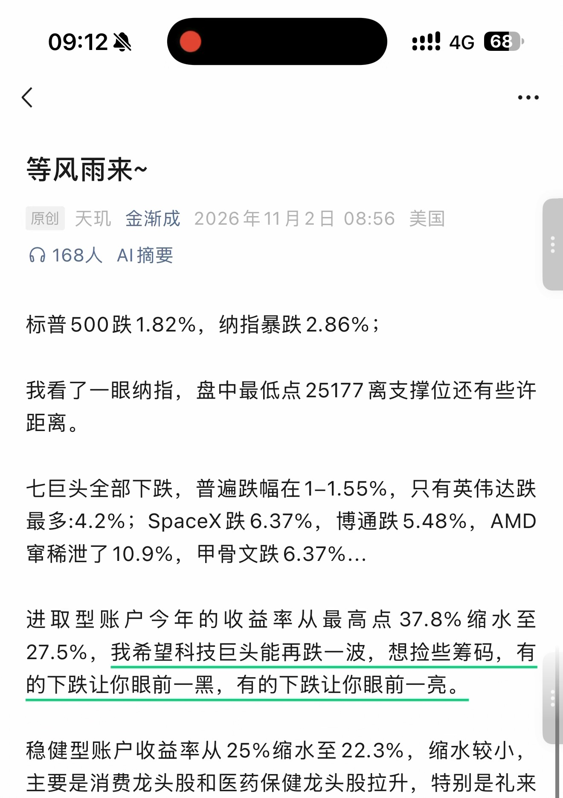
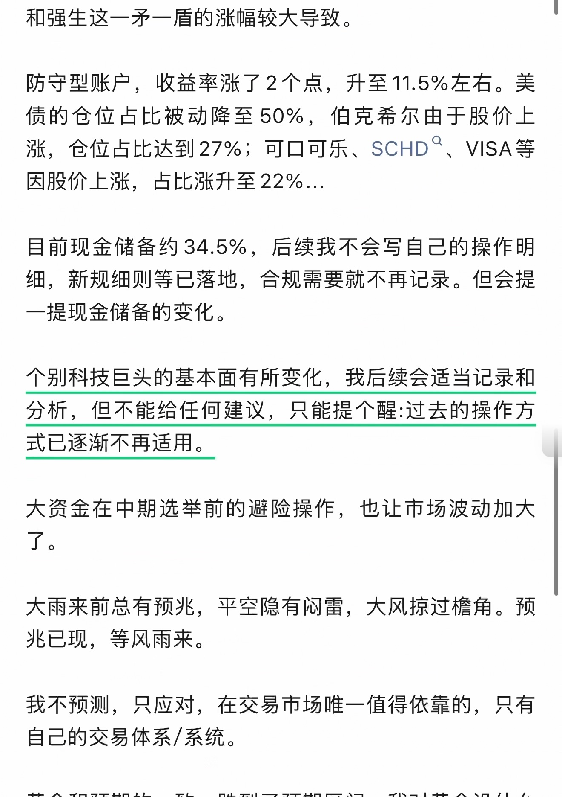
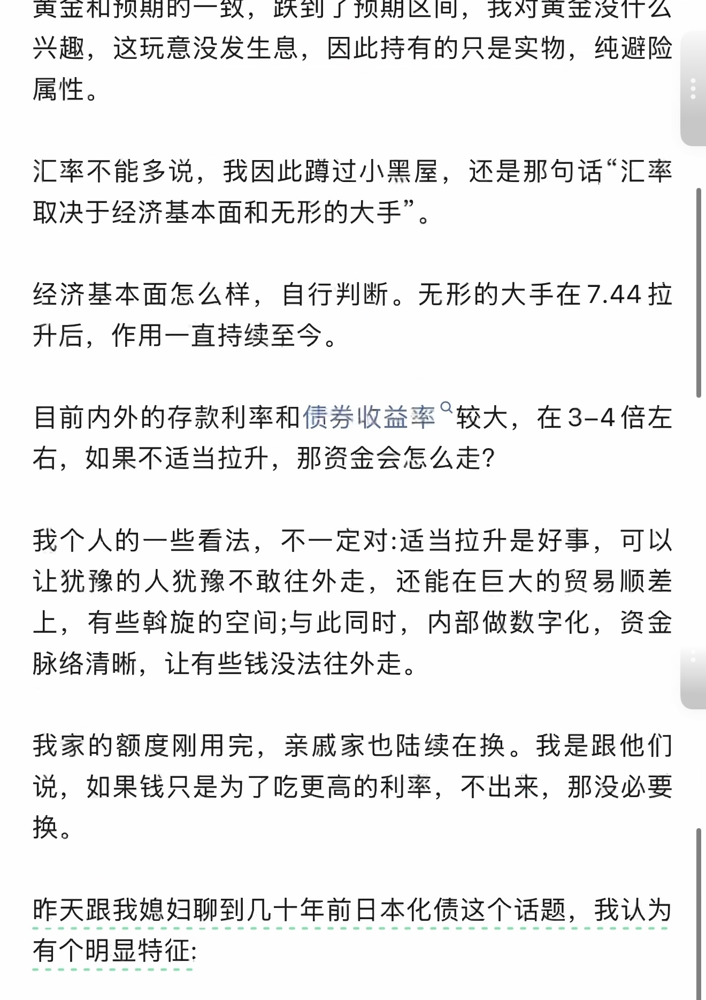
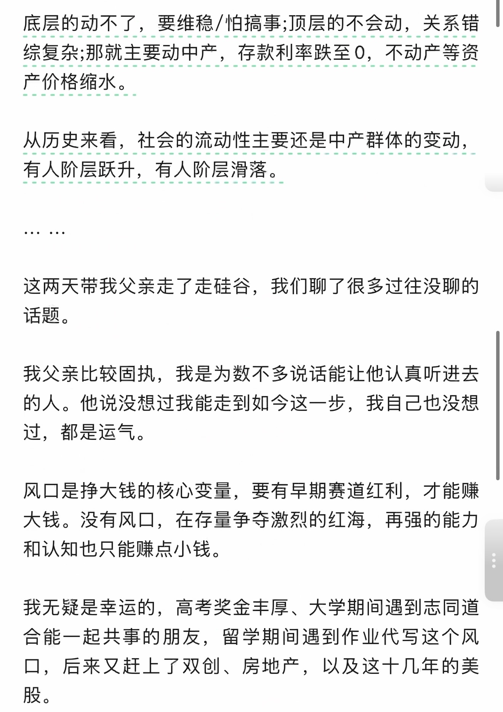
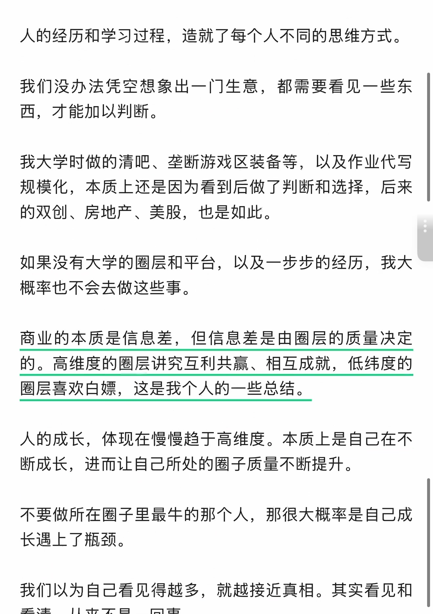
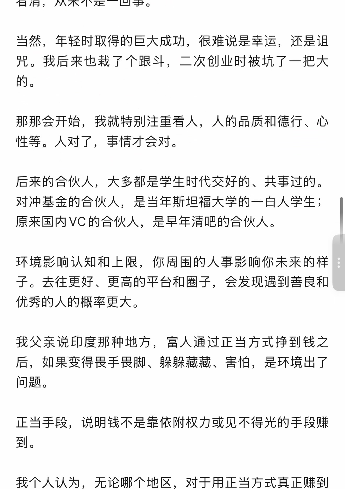
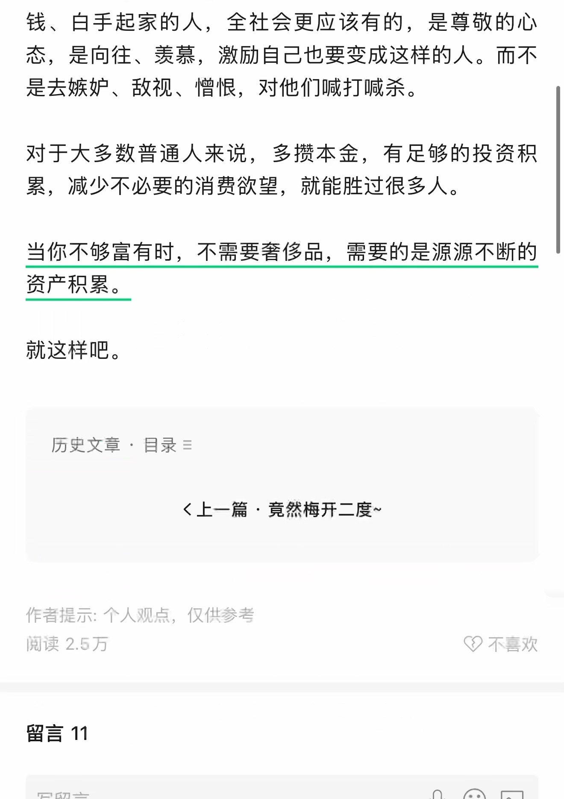
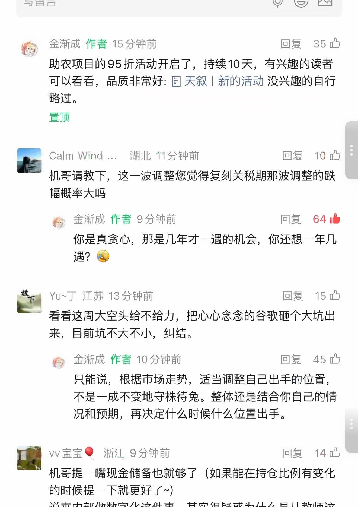
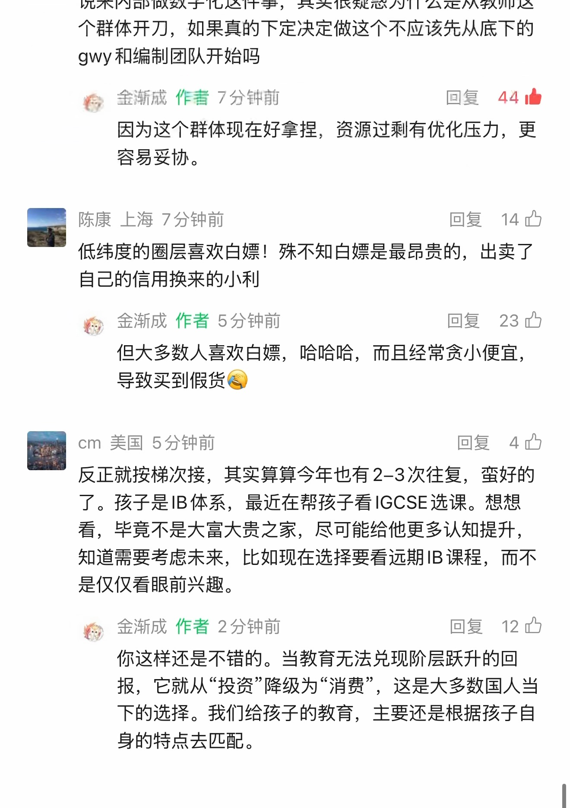

等风雨来～
识别文字连续阅读 · 原图附后
原始 PDF 不公开，本页展示捕获页面的截图。 识别文字按页序连续显示，全部原始截图附在文末，便于对照。文字由视觉转录整理，尚未经人工逐字核对，可能存在错字、漏字、漏行、顺序或断行错误。留言与作者回复仅限截图中可见的内容，不代表完整线上留言，也未据此推断留言总数。
OCR 识别提示（待核对）
- OCR/视觉转录文字，尚未逐字校对；可能错字、漏字、漏行，数字、姓名、表情、标点及断行也可能有误，请以截图为准。
- 这里只保留 PDF 已截到的正文、留言和作者回复；截图以外的留言不在此存档中。
- 未从截图推断留言总数或回复关系；手机界面文字也可能混入 OCR。
- 方括号中的表情说明是转录注释，原始表情请对照截图。
- 页面边界仅露出少量字形的重复行归到文字主体可见的相邻页；不推断缺失内容。
识别文字
文字按截图页序整理；页边重复行仅保留一次，原始 PDF 不公开。方括号中的表情说明为转录注释。
第 1 页对照原图
等风雨来～
原创 天玑 金渐成 2026年11月2日 08:56 美国
标普500跌1.82%，纳指暴跌2.86%；
我看了一眼纳指，盘中最低点25177离支撑位还有些许距离。
七巨头全部下跌，普遍跌幅在1-1.55%，只有英伟达跌最多:4.2%；SpaceX跌6.37%，博通跌5.48%，AMD窜稀泄了10.9%，甲骨文跌6.37%..
进取型账户今年的收益率从最高点37.8%缩水至27.5%，我希望科技巨头能再跌一波，想捡些筹码，有的下跌让你眼前一黑，有的下跌让你眼前一亮。
稳健型账户收益率从25%缩水至22.3%，缩水较小，主要是消费龙头股和医药保健龙头股拉升，特别是礼来
第 2 页对照原图
和强生这一矛一盾的涨幅较大导致。
防守型账户，收益率涨了2个点，升至11.5%左右。美债的仓位占比被动降至50%，伯克希尔由于股价上涨，仓位占比达到27%；可口可乐、SCHD、VISA等因股价上涨，占比涨升至22%...
目前现金储备约34.5%，后续我不会写自己的操作明细，新规细则等已落地，合规需要就不再记录。但会提一提现金储备的变化。
个别科技巨头的基本面有所变化，我后续会适当记录和分析，但不能给任何建议，只能提个醒过去的操作方式已逐渐不再适用。
大资金在中期选举前的避险操作，也让市场波动加大了。
大雨来前总有预兆，平空隐有闷雷，大风掠过檐角。预兆已现，等风雨来。
我不预测，只应对，在交易市场唯一值得依靠的，只有自己的交易体系/系统。
第 3 页对照原图
黄金和预期的一致，跌到了预期区间，我对黄金没什么兴趣，这玩意没发生息，因此持有的只是实物，纯避险属性。
汇率不能多说，我因此蹲过小黑屋，还是那句话“汇率取决于经济基本面和无形的大手”。
经济基本面怎么样，自行判断。无形的大手在7.44拉升后，作用一直持续至今。
目前内外的存款利率和债券收益率较大，在3-4倍左右，如果不适当拉升，那资金会怎么走？
我个人的一些看法，不一定对：适当拉升是好事，可以让犹豫的人犹豫不敢往外走，还能在巨大的贸易顺差上，有些斡旋的空间；与此同时，内部做数字化，资金脉络清晰，让有些钱没法往外走。
我家的额度刚用完，亲戚家也陆续在换。我是跟他们说，如果钱只是为了吃更高的利率，不出来，那没必要换。
昨天跟我媳妇聊到几十年前日本化债这个话题，我认为有个明显特征
第 4 页对照原图
底层的动不了，要维稳/怕搞事；顶层的不会动，关系错综复杂；那就主要动中产，存款利率跌至0，不动产等资产价格缩水。
从历史来看，社会的流动性主要还是中产群体的变动，有人阶层跃升，有人阶层滑落。
这两天带我父亲走了走硅谷，我们聊了很多过往没聊的话题。
我父亲比较固执，我是为数不多说话能让他认真听进去的人。他说没想过我能走到如今这一步，我自己也没想过，都是运气。
风口是挣大钱的核心变量，要有早期赛道红利，才能赚大钱。没有风口，在存量争夺激烈的红海，再强的能力和认知也只能赚点小钱。
我无疑是幸运的，高考奖金丰厚、大学期间遇到志同道合能一起共事的朋友，留学期间遇到作业代写这个风口，后来又赶上了双创、房地产，以及这十几年的美股。
第 5 页对照原图
人的经历和学习过程，造就了每个人不同的思维方式。我们没办法凭空想象出一门生意，都需要看见一些东西，才能加以判断。
我大学时做的清吧、垄断游戏区装备等，以及作业代写规模化，本质上还是因为看到后做了判断和选择，后来的双创、房地产、美股，也是如此。
如果没有大学的圈层和平台，以及一步步的经历，我大概率也不会去做这些事。
商业的本质是信息差，但信息差是由圈层的质量决定的。高维度的圈层讲究互利共赢、相互成就，低纬度的圈层喜欢白嫖，这是我个人的一些总结。
人的成长，体现在慢慢趋于高维度。本质上是自己已在不断成长，进而让自己所处的圈子质量不断提升。
不要做所在圈子里最牛的那个人，那很大概率是自己成长遇上了瓶颈。
我们以为自己看见得越多，就越接近真相。其实看见和看清，从来不是一回事。
第 6 页对照原图
当然，年轻时取得的巨大成功，很难说是幸运，还是诅咒。我后来也栽了个跟斗，二次创业时被坑了一把大的。
那那会开始，我就特别注重看人，人的品质和德行、心性等。人对了，事情才会对。
后来的合伙人，大多都是学生时代交好的、共事过的。对冲基金的合伙人，是当年斯坦福大学的一白人学生；原来国内VC的合伙人，是早年清吧的合伙人。
环境影响认知和上限，你周围的人事影响你未来的样子。去往更好、更高的平台和圈子，会发现遇到善良和优秀的人的概率更大。
我父亲说印度那种地方，富人通过正当方式挣到钱之后，如果变得畏手畏脚、躲躲藏藏、害怕，是环境出了问题。
正当手段，说明钱不是靠依附权力或见不得光的手段赚到。
我个人认为，无论哪个地区，对于用正当方式真正赚到
第 7 页对照原图
钱、白手起家的人，全社会更应该有的，是尊敬的心态，是向往、羡慕，激励自己也要变成这样的人。而不是去嫉妒、敌视、憎恨，对他们喊打喊杀。
对于大多数普通人来说，多攒本金，有足够的投资积累，减少不必要的消费欲望，就能胜过很多人。
当你不够富有时，不需要奢侈品，需要的是源源不断的资产积累。
就这样吧。
历史文章 · 目录
上一篇 · 竟然梅开二度~
作者提示：个人观点，仅供参考
阅读 2.5万
留言 11
第 8 页对照原图
金渐成 作者 15分钟前 [置顶] [赞35]
助农项目的95折活动开启了，持续10天，有兴趣的读者可以看看，品质非常好：天叙｜新的活动 没兴趣的自行略过。
Calm Wind ... 湖北 11分钟前 [赞10]
机哥请教下，这一波调整您觉得复刻关税期那波调整的跌幅概率大吗
金渐成 作者 9分钟前 [赞64]
你是真贪心，那是几年才一遇的机会，你还想一年几遇？😅
Yu~丁 江苏 13分钟前 [赞15]
看看这周大空头给不给力，把心心念念的谷歌砸个大坑出来，目前坑不大不小，纠结。
金渐成 作者 10分钟前 [赞45]
只能说，根据市场走势，适当调整自己出手的位置，不是一成不变地守株待兔。整体还是结合你自己的情况和预期，再决定什么时候什么位置出手。
vv宝宝🎈 浙江 9分钟前 [赞14]
机哥提一嘴现金储备也就够了（如果能在持仓比例有变化的时候提一下就更好了～）说来内部做数字化这件事，其实很疑惑为什么是从教师这
第 9 页对照原图
个群体开刀，如果真的下定决定做这个不应该先从底下的gwy和编制团队开始吗
金渐成 作者 7分钟前 [赞44]
因为这个群体现在好拿捏，资源过剩有优化压力，更容易妥协。
陈康 上海 7分钟前 [赞14]
低纬度的圈层喜欢白嫖，殊不知白是最昂贵的，出卖了自己的信用换来的小利
金渐成 作者 5分钟前 [赞23]
但大多数人喜欢白嫖，哈哈哈，而且经常贪小便宜，导致买到假货
cm 美国 5分钟前 [赞4]
反正就按梯次接，其实算算今年也有2-3次往复，蛮好的了。孩子是IB体系，最近在帮孩子看IGCSE选课。想想看，毕竟不是大富大贵之家，尽可能给他更多认知提升，知道需要考虑未来，比如现在选择要看远期IB课程，而不是仅仅看眼前兴趣。
金渐成 作者 2分钟前 [赞12]
你这样还是不错的。当教育无法兑现阶层跃升的回报，它就从“投资”降级为“消费”，这是大多数国人当下的选择。我们给孩子的教育，主要还是根据孩子自身的特点去匹配。
第 10 页对照原图
普通人理财的最佳方式
[页脚互动数字：939、862、142、11。]
原始图片 · 10 页
第 1 页 · 原始截图


第 2 页 · 原始截图


第 3 页 · 原始截图


第 4 页 · 原始截图


第 5 页 · 原始截图


第 6 页 · 原始截图


第 7 页 · 原始截图


第 8 页 · 原始截图


第 9 页 · 原始截图


第 10 页 · 原始截图

按日期浏览全部来源（同日按条目标识排序）
回到页首